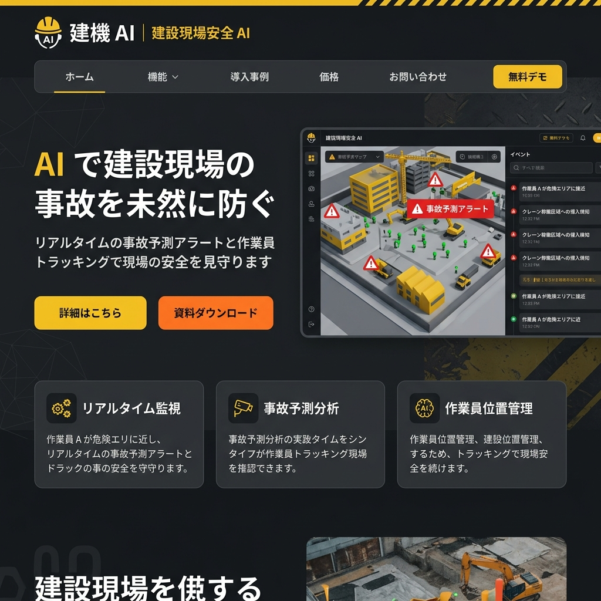

saas
現場の「ヒヤリハット」を、
現場の「ヒヤリハット」を、
AIが事故になる前に予測する。
建設現場での事故は会社にとって致命的。しかしベテランの減少により、新人作業員の危険行動をすべて監視するのは不可能です。安全パトロールの限界をAIとIoTで超えます。

危険エリア高精度トラッキング
重機の稼働範囲と作業員の位置情報をリアルタイム比較。接触の危険があれば、即座にスマートヘルメットへ警告音を送信。
熱中症・疲労度検知センサー
バイタルデータから「疲労による注意力散漫」を予測。事故が起きる前に休憩をシステムが自動指示します。
KY（危険予知）自動レポート
その日の現場の状況に基づいたKY活動票を生成。形骸化しがちな安全確認をデジタルにアップデート。